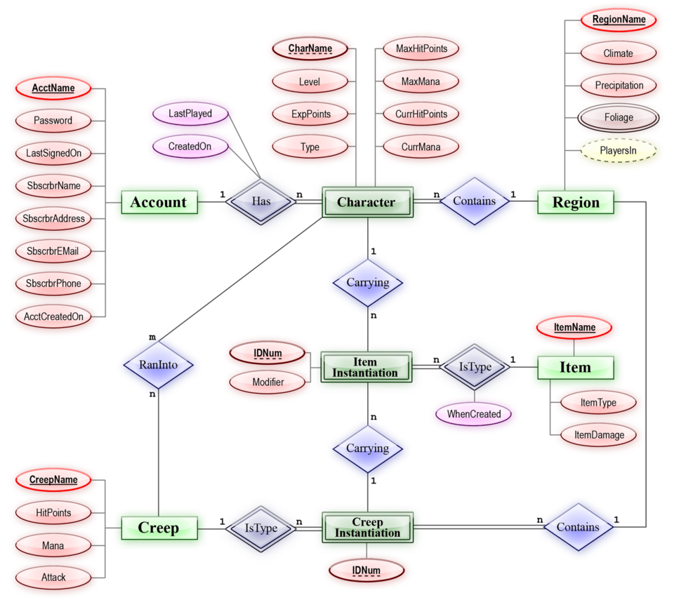

ERD diagramm, inglise keeles Entity Relationship Diagram, on vooskeemi tüüp mis illustreerib kuidas
erinevad komponendid on omavahel seotud. ERD kasutatakse tavaliselt prototüüpimises ja süsteemide
debugimiseks erinevates valdkondades, sealhulgas Tarkvaratehnika, äriinfotehnoloogia ja haridus ja
teadusuuring. Diagrammi kujuntamiseks kasutatakse erinevaid sümbole nagu ristkülikud, ringe ja punktiir-
jooned, mis kujutavad gramaatilist struktuuri.
ERD kasutatakse mitmes stsenaariumites kus andmesüsteemide mõistmine ja edastamine on ülioluline:
Anmdebaasi kujundamine kus ERD on oluline uute andmebaaside loomisel. Selle abil saab määrata tabeleid,
veergusi ja suhteid, et andmebaas oleks hästi üles ehitatud ja vastupidav.
Süsteemi analüüs kus analüüsitakse olemasolevaid süsteeme uute kujundamiseks.
Rakenduse arendus kus arendajad kasutavad ERD diagramme, et rakenduse olulisi osadest arusaada.
Kokkuvõttelt ERD diagrammid on oluline igas kujundus etappis.

Primary Key on määratud atribuut või atribuutide kogum mis leiab iga üksuse kirje ühiselt. Selle eesmärk ERD's
on tagada unikaalsus ja andmete terviklikkus.Primary key tagab dokumentide ainulaadsust, toetab andmete
terviklikkust ja täpsust võimaldab olemite vahelist suhete kaardistamist, jne.
Foreign Key on kogum tabelis mis viitab Primary Key teises tabelis mis seob need kaks tabelit kokku et tagada kogu
tabeli andmebaasi järjepidevust.
Composite Key on võtme tüüp mis koosneb kahest või enamast atribuudist, mida kasutaatkse kui ühest veerust ei piisa
tabeli rea üheseks tuvastamiseks.